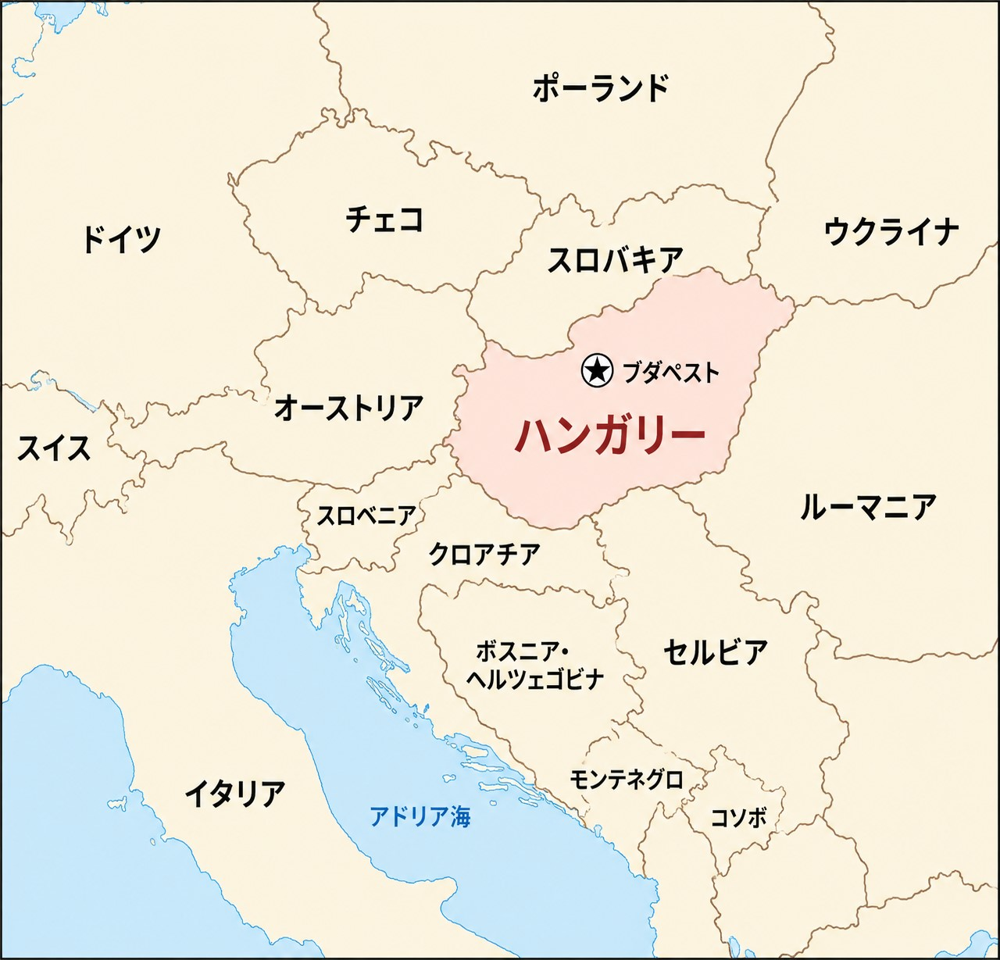

ブダペスト
首都。お店と交通が充実。家賃は高め。
留学前に知りたいことを、ひと目で。
記事更新：2026年10月19日

中央ヨーロッパにあるEU加盟国。
フォリント÷2 ≒ 日本円
1,000 Ftなら約500円。為替で変わる目安です。
生活費＝家賃＋食費＋交通費。一番差が出るのは、家賃です。
学費と生活費は、分けて考えよう。
大学のある街で暮らします。
首都。お店と交通が充実。家賃は高め。
東部の大学都市。トラム・バスで移動。
南東部。平坦で、徒歩や自転車で移動しやすい街。
南西部。歴史ある街並み。移動は主にバス。

西部。ブダペスト・ウィーン方面へ鉄道で移動。
夏は暑く、冬は冷え込みます。
半袖・帽子・水分補給。部屋にエアコンがあるかも確認。
厚手のコート・手袋・マフラー。滑りにくい靴も役立ちます。
春と秋は、脱ぎ着できる上着があると便利です。
住まい・交通・持ち物をチェック。